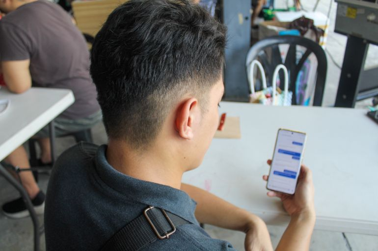

Early this month, the Securities and Exchange Commission (SEC) announced a plan to cap interest rates and other fees charged by lending and financing companies, particularly online lending apps (OLAs) that have proliferated and are easily accessible on social media, as part of government efforts to help tens of thousands of Filipinos victimized and trapped in debt caused by predatory lending practices.
“The number of borrowers struggling under excessive interest rates has continued to grow in recent years, as certain entities exploit the accessibility of [OLAs] to trap our fellow kababayans in cycles of debt,” lamented SEC Chair Francis Lim.
High interest rates are at the root of the harassment problems now plaguing the online lending space. A study by Digido Finance Corp. released last January showed that the local online lending sector expanded by 28 percent yearly from 2013 to 2023, with the growth fueled by Gen Z, the so-called first “digital natives” who grew up with the internet, smartphones and social media. It noted that the total number of OLA downloads soared by 56.4 percent to 73.5 million in 2024, but this growth was accompanied by an increase in online violations by lenders against the borrowers.